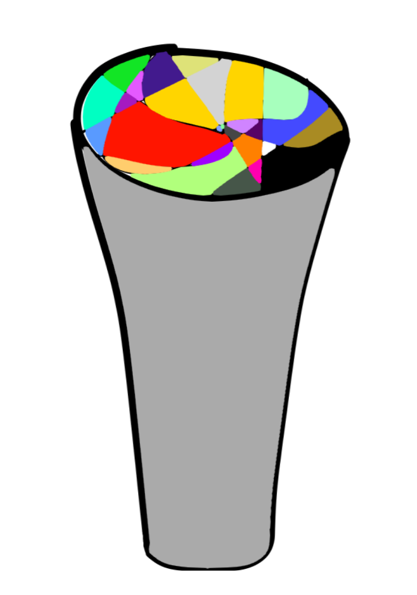

The Compound
A-01
-----------
The Everything Drink
Breach Stat : Low
Type : Mibika
Site : 01
Entry : 20/09/2045
Description
A-01 Also known as The Everything Drink is a cup filled with a liquid (which will be reffered to as A-01-Z) when an individual consume the A-01-Z the individual would recieve a random physical or mental effect ranging from Increase on Physical stamina to instant death (see Experiment Log 02), it was retrieved from the Artifact collection of Viscount of Loxar from the Kingdom of Ruxan,The Viscount said that "The Drink is found on the remain of an ancient Kingdom long forgotten, it was believed that The Drink is made from Hundred of Potion, the and the Cup is crafted with various Metals ranging from the Kingdom of Ruxan to the Darube Empire, and it was enchanted by 35 Head Mage from across the Continent", when the Liquid is emptied, the liquid will refill itself after approximately 17 Earth Hour, according to the Head Mage of the Viscount the Drink is created by the Bottles, and the materials is collected from the Magical Energy in the enviroment, further research is needed to prove this claim (see Experiment Log 03),on 20/09/2045 and was put into Site 01. See Further Detail below.
Experiment Log 01
Researcher : Dr.Jong Li and Mage Krolos
Experiment Description : Observing the Interaction between A-01-Z with Various Object
Test 1 : Interaction Between A-01-Z and a 1Kg Iron Block
Result : No Change
Test 2 : Interaction Between A-01-Z and a piece of Leaf taken from an Apple Tree
Result : No Change
Test 3 : Interaction Between A-01-Z and a 1 Meter Bamboo
Result : No Change
Test 4 : Interaction Between A-01-Z and an Enchanted Water
Result : The Enchanted Water mixed with A-01-Z start to boil, after approximately 2 Minute and 30 Second the Enchanted Water Evaporated in 3 Second.
Test 5 : Interaction Between A-01-Z and an Enchanted Water
Result : The Enchanted Water mixed with A-01-Z start to freeze, after approximately 2 Minute and 30 Second the Enchanted Water melted, leaving a black liquid, the black liquid evaporated after a Minute.
Conclusion : A-01-Z does not effect Object without Magical Element in them, however when mixed with a Magical Related Object the will react, the reaction appears to be random,Requesting further Experimentation.